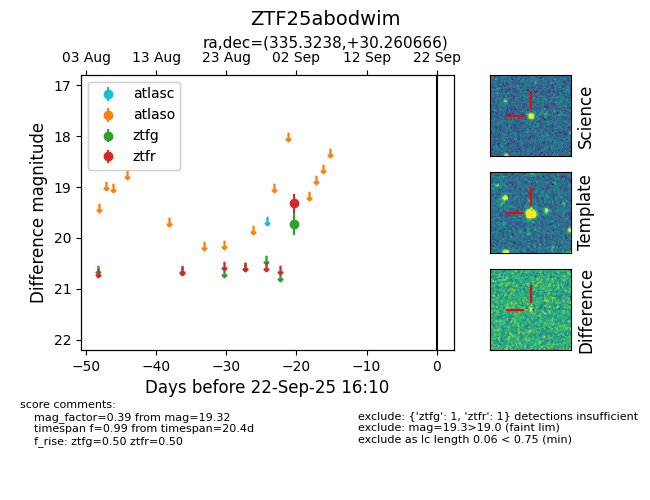

FINK: ZTF25abodwim
Lasair: ZTF25abodwim
ALeRCE: ZTF25abodwim
ZTF25abodwim (ztf,fink)
equatorial (ra, dec) = (335.3238,+30.26067)
galactic (l, b) = (88.2610,-22.32059)

last ztfg=19.72, ztfr=19.32
1 ztfg, 1 ztfr detections